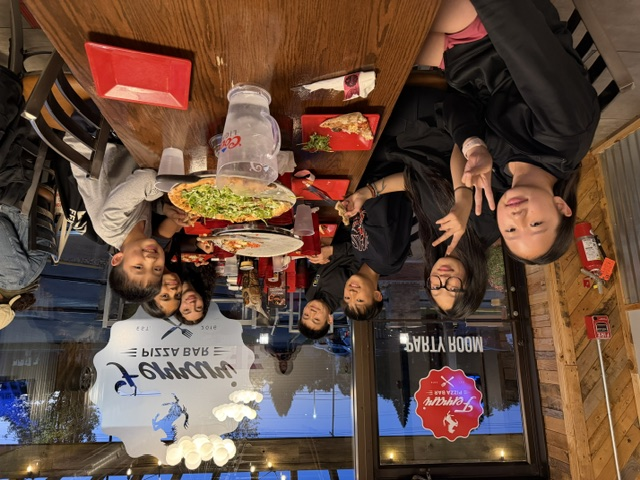

Tuesday Edition
Vol. I — No. 007 · Chatham, N.J. · October 14, 2026
Canadian Epeeist Edges World No. 4 in Vancouver Grand Prix Final
A late-priority surge lifts a home-strip underdog past the draw’s top remaining seed.
VANCOUVER — Canadian epeeist Avery Chen (world No. 47) upset Italy’s Luca Moretti, the world’s No. 4, 15–14 in a one-touch priority finish. Chen trailed 9–12 after two periods, then closed with three unanswered touches before priority decided it. Moretti had looked in control through pools and early direct elimination, including a 15–9 quarterfinal over France’s Elise Marchand.
Chen’s coach called the final “a textbook distance reset”: shorter advances, fewer searches, and a willingness to invite the double when ahead in priority. Bronze went to Korea’s Min-jun Park over the United States’ Jordan Hale, 15–11. Hale’s deep run still moves him into the early-season Grand Prix points mix and gives American juniors a clear study tape.
Why it matters here: Grand Prix finals reward the same habits we drill on Monday night — hold distance when you are down, and do not chase when priority is yours. Chen’s last three touches came off retreats, not lunges. Bout video is expected on FencingTV and the FIE results pages this week. Elite FC fencers who streamed the final should bring one stolen idea to Tuesday Advanced. For readers new to priority: after a draw for who advances on a tie, the holder wins any double — which is exactly how Chen closed.
New Letters on the Wall
| Name | Rating | Event |
|---|
| Alex Rivera | E26 | Y14 ME |
| Jordan Lee | D26 | Cadet WE |
| Sam Patel | E26 | Y12 ME |
Three Elite FC letters this cycle — celebrate on the wall board and ask how the DE felt.
Ben Gutenberg SYC — Elite FC
| Fencer | Finish |
|---|
| Mila Siu | 3rd, Y12 WE |
| Penny Young | 6th, Y12 WE |
| Stella Kuo | T16, Y14 WE |
Strong youth weekend for the club. Congrats to all three — and to the travel parents.
USA Fencing Posts Revised Youth Points Timeline for Winter
USA Fencing published a revised winter timeline for youth points rollups, clarifying when Super Youth Circuit and Regional Open results lock into the national youth standings. Two mid-season freeze dates shift later by one week so late November SYCs still count toward December seeding. Cadet and junior rollups are unchanged. Parents tracking Y10–Y14 paths should re-check the points FAQ on usafencing.org before the next entry window. Coaches say the extra week helps families who travel every other weekend keep paperwork honest without racing a Friday close. Print the FAQ page and tape it inside the gear bag — the freeze date is easier to miss than a bout time.
Epee Notebooks — Early Duals
High-school epee duals are already on the board across North Jersey. A neighbor tip — vetted for this pretend run — has Chatham boys opening with a 14–8 dual win last week, with several Elite FC fencers expected to see strip time as rosters settle. Girls’ squads around Morris County report similar early tests. Dual-meet season is where club distance work meets school dual pressure: short warm-ups, loud gyms, and referees who want clean attacks. Watch NJ.com fencing briefs for confirmed scores before you quote hallway rumors. Dual season rewards the fencer who can reset distance in a noisy gym — exactly what Advanced drills on Tuesday at 6:00.

On the strip. Club newsletter photo — Elite FC session. Photo desk pick for this issue.
Musketeers Mon 4:30 · Advanced Tue 6:00. Desk whiteboard wins if a group moved.
Nearby Tournaments — Elite FC Entries
| Tournament | Events | When | Elite FC Entered |
|---|
| Medeo Youth Challenge #3 | Y12 Women · Y10 Mixed | Sun Oct 11 | Jiang Christina (Y12 Women); Cheng Bryce (Y10 Mixed) |
| Hub City Fall Epee Open, New Brunswick | Y14 / Cadet / Senior Mixed | Oct 18 | Ask at the desk — spots still open |
| Garden State RJC, Edison | Cadet / Junior | Oct 25 | Travel interest forming |
Cheer tip: Medeo is the near-term priority. If you are free Sunday, go support Christina and Bryce — and enter the next local if your event is open. Hub City still has room; put your name on the desk clipboard if you want a ride share to New Brunswick.
Page Two
Club Calendar & Notes · Vol. I — No. 007
After the SYC: Three Finishes, One Lesson
Ben Gutenberg gave Elite FC three finishes for the wall: Mila Siu’s Y12 bronze, Penny Young’s sixth in the same event, and Stella Kuo’s top-16 in Y14. Ask them what changed between pools and DEs — usually rest, simple actions, and fewer hero lunges. The wall board only holds names; the useful part is the story that got them there.
Medeo Youth Challenge #3 is Sunday. Christina Jiang and Bryce Cheng are on the sheet. If you are free, go cheer — local strips are where clubmates learn who shows up. Bring one DE lesson back to Tuesday Advanced. If you medal next week, tell the desk the same night so the board updates before Thursday practice.
Ratings rows on page one (Rivera, Lee, Patel) are invented celebration fuel for this sample. The SYC finishes and Medeo names are the real Frank-forwarded facts this sheet is built around. That split is the pipeline test: pretend national color beside real club ink. Real weeks will drop the invented letters the moment the results-app email arrives.
Strip Notes From Vancouver
Chen’s closing period is worth a freeze-frame: three retreats, three lights, no chase. Moretti’s early lead came from searches that worked until they didn’t.
Hale’s bronze bout against Park is the cleaner teaching tape for cadets — fewer priority gymnastics, more honest distance. Replay tip: watch the last minute muted once, then with commentary. You will notice footwork you missed while listening to the call.
Cadets: pause every time the referee walks the strip — that is where distance arguments get won. Steal one idea, not the whole final. If you only have ten minutes, watch Chen’s last period once and stop — the rest is noise.
How Dual Meets Differ From Club
School duals compress warm-ups and stack bouts. Referees want clear attacking intent; passivity costs arrive faster than Saturday open fencing. Bring a notebook: one idea per bout is enough. The Chatham 14–8 tip on page one is labeled pretend — confirm on NJ.com before you quote it in the hallway.
Returning varsity fencers should lock school tryout dates with their coach; club Advanced on Tuesday still covers the distance work duals punish when you forget it. Freshmen: salute cleanly, check your body cord twice, and ask a senior where the strip assignment sheet lives.
County rivals will scout the same YouTube finals on the watch board — steal the footwork, not the drama. If your school posts dual results late, email the Gazette tip address the same night — hallway memory fades by Wednesday.
What the Signup Board Is For
The board exists to nudge more Elite FC names onto start lists. Cap stays at a few tournaments so names stay readable. Medeo is this week’s cheer target; Hub City and Garden State RJC are next on the local path.
Parents new to AskFRED: check weapon filters before you pay. This paper is epee only. If your name is missing from a tournament you already entered, tell the desk before the next issue. The board is useless if it lags the start list by a week — same-night tips beat hallway memory.
This Week at Elite FC
| When | What’s On |
|---|
| Mon 4:30 | Musketeers group class |
| Tue 6:00 | Advanced group class |
| Wed–Fri | Classes + open fencing (desk hours) |
| Saturday | Youth practice blocks — ask coach |
| Sunday | Closed · Medeo #3 away |
Desk whiteboard wins if a group moved. Loaner masks sign out before warm-up. Parents: wait off the strip edge during Advanced. Saturday youth blocks rotate by age — ask Coach which strip your group owns before you unpack.
Youth Points in One Sentence
Late-November SYCs can still feed December seeding if you entered the right age event and the result posts before the lock. Screenshot the FAQ the day you register. Y10–Y12: double-check age category before you hit pay on AskFRED. If a result looks missing after seven days, email USA Fencing membership support with the tournament ID.
Where to Watch
| Event | When | Watch |
|---|
| Vancouver GP epee finals (replay) | Anytime | FencingTV / YT |
| October NAC Div I epee finals | Anytime | USA Fencing YT |
| Casablanca Epee World Cup | Oct 15–18 | FencingTV |
| First to 15 podcast | Anytime | Podcast apps |
| November NAC Div I epee | Nov 20–23 | USA Fencing YT |
Watch like a fencer: count advances before each touch. Pause priority twice — feet, then blade. Bring a notebook; steal one idea per bout.
Next Week’s Ask
Real issues need real start lists, real ratings emails, and Frank’s budget checkboxes. Green-light a live week when the pipeline feels boring — boring is the goal.
About This Sample
Vol. I — No. 007 tests Gazette Desk composition after budget approval: hierarchy that feels alive, flanks with punch, a dateline that fills its bar, and furniture that earns a glance. Comic and deadlines were cut from Frank’s pretend budget; TV stayed because the include checkboxes won over the “cut unless inches free” note.
Folder shape: issue.html, paper.pdf, approvals.json, sources.json, and media/. Articles stay box-free with column rules; borders stay on utility tables only. Not for hallway distribution until a real week is green-lit.
Treat invented national names as layout fuel; Frank-forwarded club facts are gospel for the wall board. Push the issue folder when the PDF looks right; keep submissions/ out of git.
Cheer Tip — Medeo
Sunday is Medeo Youth Challenge #3. Christina Jiang (Y12 Women) and Bryce Cheng (Y10 Mixed) are on the sheet. If you are free, go support — local strips are where clubmates learn who shows up. Hub City still has room; put your name on the desk clipboard for a New Brunswick ride share.